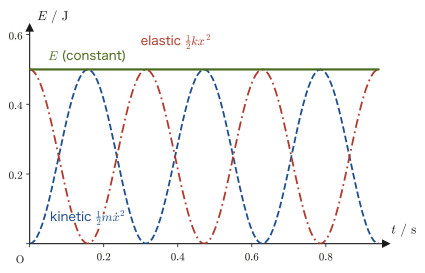
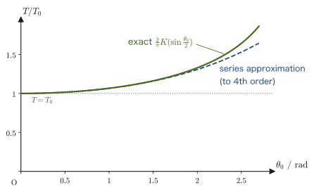
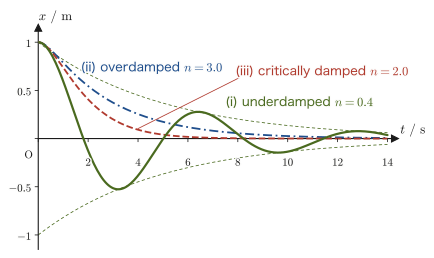
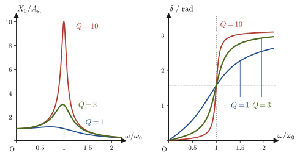

Chapter 7Simple Harmonic, Damped, and Forced Oscillations
When we push a swing, it keeps swinging back and forth with a steady rhythm. When we pluck a guitar string, it vibrates rapidly, at a rate that we hear as sound. A building sways in response to the shaking of an earthquake, with a rhythm all its own. Such “motion that repeats going back and forth”—oscillation—appears everywhere in nature and is another leading player in mechanics. In high school physics you will have learned, as formulas, that the motion of a mass–spring system is expressed by an equation such as $x=A\sin(\omega t+\varphi)$ and that its period is $T=2\pi\sqrt{m/k}$. In this chapter we confirm, without skipping a single line, that this formula follows directly from the equation of motion $m\ddot x=-kx$, a second-order differential equation.
Furthermore, a real mass–spring system is always subject to a “resistive force” such as air resistance or friction. With resistance, the oscillation gradually dies out, but the manner of the decay falls into three cases depending on the strength of the resistance: “decaying while oscillating,” “decaying without oscillating,” and “the borderline case between them.” The mechanism by which a door closer shuts a door slowly and quietly, and the mechanism by which an automobile suspension absorbs the bumps in the road without swaying too much, actually lie within these three cases. And when a periodic force from outside is applied continuously to an oscillator with resistance, a phenomenon called “resonance,” in which the amplitude becomes very large at a particular frequency, occurs. The mechanism by which a microwave oven selectively heats water molecules with microwaves, the experience that a swing goes high when it is pushed “with good timing,” and the reason that bridges and buildings are vulnerable to shaking at particular frequencies are all connected through the physics of this resonance.
The content of this chapter is also the first occasion on which the abstract solution methods learned in the companion volume “University Mathematics” (AD 02), Chapters 35, 36, and 38 (second-order linear differential equations and their solution by the operator method), are applied to concrete physical phenomena. Here, for the first time, you should get a real feel for what the material of AD 02 actually meant.
- Solving the equation of motion $m\ddot x+kx=0$ of the mass–spring system by way of the characteristic equation $m\lambda^2+k=0$, and deriving the fact that the general solution has the form $x=C_1\cos\omega t+C_2\sin\omega t$ (a concrete example of AD 02, Chapter 35)
- Proof of the law of conservation of energy for simple harmonic motion, the equation of motion of the simple pendulum and the period formula $T_0=2\pi\sqrt{l/g}$ (small-amplitude approximation), and the deviation when the amplitude is large
- The three cases (damped oscillation, overdamping, and critical damping), distinguished by the discriminant of the characteristic equation of the equation of motion $m\ddot x+n\dot x+kx=0$ in the presence of a resistive force proportional to the velocity, and the general solution in each case
- The procedure for solving the equation of motion of forced oscillation, $m\ddot x+n\dot x+kx=f_0\cos\omega t$, by the operator method (AD 02, Chapter 38) and the complex-number technique ($f_0\cos\omega t\to f_0e^{i\omega t}$, taking the real part)
- The shape of the resonance curve, the quality factor $Q$ that expresses how sharp its peak is, and the phase shift across the resonance point
Source notes: Yasuhide Mochizuki, Physics Notes: Mechanics, pp. 19–21.
7.1 The Mass–Spring System and the General Solution of Simple Harmonic Motion
A mass $m\ [\mathrm{kg}]$ is attached to the end of a spring (spring constant $k\ [\mathrm{N/m}]$) fixed to a wall, and is constrained to move only horizontally on a smooth floor. We describe the position of the mass by the coordinate $x$, whose origin is the position at the natural length (Figure 7.1). When the spring is stretched or compressed, then by Hooke's law the mass is subject to a force directed so as to return it to the natural-length position, and the magnitude of this force is proportional to the elongation (or compression) $x$. Since the direction of the force is always opposite to the displacement, the force along the $x$ axis can be written as
$$ F=-kx $$where $k\gt 0$. Substituting this into Newton's equation of motion $m\ddot x=F$ (Chapter 2) gives
\begin{equation} m\ddot x=-kx \qquad\text{that is}\qquad m\ddot x+kx=0 \label{eq:7-shm-eom} \end{equation}This is the equation of motion of the mass–spring system. Since it is a second-order differential equation containing $\ddot x$ (“x double dot,” the second derivative of $x$ with respect to the time $t$, $\dd^2x/\dd t^2$), exactly two arbitrary constants appear in the general solution (University Mathematics, Section 35.3). If we read the unknown function as $x$ and the independent variable as $t$, Eq. \eqref{eq:7-shm-eom} is exactly the special case $a=0,\ b=k/m$ of the “second-order linear homogeneous differential equation with constant coefficients, $y''+ay'+by=0$,” treated in Chapter 35 of AD 02. Below we go through its concrete solution step by step.
Derivation: Solving Eq. \eqref{eq:7-shm-eom} with the characteristic equation
Since Eq. \eqref{eq:7-shm-eom} is a linear homogeneous differential equation, as we learned in Section 35.4 of AD 02, let us assume a solution of the exponential form $x(t)=e^{\lambda t}$ ($\lambda$ is an unknown constant, not necessarily real) and substitute it. Since $\dot x=\lambda e^{\lambda t}$ and $\ddot x=\lambda^2 e^{\lambda t}$, we have
$$ m\lambda^2 e^{\lambda t}+k e^{\lambda t}=e^{\lambda t}\left(m\lambda^2+k\right)=0 $$Since the exponential function satisfies $e^{\lambda t}\neq0$ (it never becomes 0 for any $t,\lambda$), the expression in parentheses must be 0 for this equation to hold identically:
\begin{equation} m\lambda^2+k=0 \label{eq:7-char-shm} \end{equation}This is the characteristic equation of Eq. \eqref{eq:7-shm-eom}. Solving it for $\lambda$ gives
$$ \lambda^2=-\frac{k}{m} \qquad\therefore\ \lambda=\pm i\sqrt{\frac{k}{m}}=\pm i\omega, \qquad \omega\equiv\sqrt{\frac{k}{m}} $$Since $k\gt 0,\ m\gt 0$, we have $-k/m\lt 0$, so $\lambda$ is not a real number but a pure imaginary number ($i$ is the imaginary unit, $i^2=-1$). Physically, this corresponds to “oscillating forever without decaying” (as we will see in Section 7.3, if the real part of $\lambda$ is negative the amplitude decays, and if the real part is 0 the amplitude neither decays nor grows). Having obtained the two characteristic roots $\lambda=\pm i\omega$, we conclude from the result of Section 35.4 of AD 02 (a linear combination of the fundamental solutions $y_1=e^{\lambda_1 t},\ y_2=e^{\lambda_2 t}$ is the general solution) that the general solution can be written as
$$ x(t)=C_1'e^{i\omega t}+C_2'e^{-i\omega t} $$where $C_1',C_2'$ are arbitrary constants (which may be complex numbers). Now we use Euler's formula (University Mathematics, Section 21.4) $e^{i\theta}=\cos\theta+i\sin\theta$ and substitute $e^{i\omega t}=\cos\omega t+i\sin\omega t$ and $e^{-i\omega t}=\cos\omega t-i\sin\omega t$, which gives
$$ x(t)=C_1'(\cos\omega t+i\sin\omega t)+C_2'(\cos\omega t-i\sin\omega t) =(C_1'+C_2')\cos\omega t+i(C_1'-C_2')\sin\omega t $$Now, $x(t)$ is the actual position of the mass, so it must be real. We therefore redefine the constants as new real constants:
$$ C_1\equiv C_1'+C_2',\qquad C_2\equiv i(C_1'-C_2') $$(If $C_1',C_2'$ are complex conjugates of each other, then $C_1,C_2$ are real. Re-choosing the arbitrary constants of the general solution as the real numbers $C_1,C_2$ does not change the set of solutions that can be expressed.) The general solution can then be rewritten in the following form, using only real numbers:
\begin{equation} x(t)=C_1\cos\omega t+C_2\sin\omega t \label{eq:7-shm-general} \end{equation}∎
Theorem 7.1: General solution of simple harmonic motion
The general solution of the equation of motion $m\ddot x+kx=0$ of a mass–spring system with mass $m$ and spring constant $k$ is
\begin{equation} x(t)=C_1\cos\omega t+C_2\sin\omega t,\qquad \omega=\sqrt{\frac{k}{m}} \label{eq:7-shm-thm} \end{equation}Here $C_1,C_2$ are arbitrary constants determined by the initial conditions.
Definition 7.1: Angular frequency, period, and frequency
In Eq. \eqref{eq:7-shm-thm}, $\omega=\sqrt{k/m}\ [\mathrm{rad/s}]$ is called the angular frequency. The time the mass takes to make one round trip is called the period $T\ [\mathrm{s}]$, and the number of round trips per second is called the frequency $f\ [\mathrm{Hz}]$. From the periodicity of $\cos\omega t$ ($\omega(t+T)=\omega t+2\pi$), they satisfy the relations
$$ T=\frac{2\pi}{\omega}=2\pi\sqrt{\frac{m}{k}},\qquad f=\frac{1}{T}=\frac{\omega}{2\pi} $$Note that $T=2\pi\sqrt{m/k}$ is exactly the formula for the period of a mass–spring system that you memorized as a formula in high school physics, and that here it has been derived by actually solving the equation of motion $m\ddot x+kx=0$. Incidentally, the symbol $\omega$ was also used in Chapter 6 for the angular velocity $\dot\theta$ in polar coordinates, but here it is a quantity representing the “speed of oscillation,” and nothing is actually rotating (however, as we will see in Section 7.4, we use the technique of treating $\omega t$ as a rotation angle in the complex plane, so the two are not entirely unrelated).
The constants $C_1,C_2$ in Eq. \eqref{eq:7-shm-thm} are determined by “where the mass is placed at time $t=0$ and what velocity it is given” (the initial conditions). Consider the case, as in Figure 7.1, in which the spring is pulled a distance $A$ from its natural length and released gently; the initial conditions are then
$$ x(0)=A,\qquad \dot x(0)=0 $$Substituting $t=0$ into Eq. \eqref{eq:7-shm-thm} gives $x(0)=C_1\cos0+C_2\sin0=C_1$, so $x(0)=A$ gives $C_1=A$. Also, differentiating Eq. \eqref{eq:7-shm-thm} gives $\dot x(t)=-C_1\omega\sin\omega t+C_2\omega\cos\omega t$, and substituting $t=0$ gives $\dot x(0)=C_2\omega$, so $\dot x(0)=0$ (and $\omega\neq0$) gives $C_2=0$. Therefore the solution under these initial conditions is
\begin{equation} x(t)=A\cos\omega t \label{eq:7-shm-particular} \end{equation}This is the equation of simple harmonic motion of the mass–spring system that one learns first in high school physics.
Intuition: Why a combination of $\cos\omega t$ and $\sin\omega t$?
Eq. \eqref{eq:7-shm-thm} can represent all of the infinitely many simple harmonic motions $A\cos(\omega t-\delta)$ with different phases ($A,\delta$ are constants). Indeed, by the addition formulas for the trigonometric functions, $A\cos(\omega t-\delta)=A\cos\delta\cos\omega t+A\sin\delta\sin\omega t$, and if we set $C_1=A\cos\delta,\ C_2=A\sin\delta$, this coincides with the form of Eq. \eqref{eq:7-shm-thm}. That is, determining $C_1,C_2$ is the same as determining the “amplitude $A=\sqrt{C_1^2+C_2^2}$” and the “phase (offset of the starting point) $\delta=\arctan(C_2/C_1)$” of the oscillation. If the initial conditions change, the same spring and the same mass give a simple harmonic motion with a different amplitude and phase, but the angular frequency $\omega=\sqrt{k/m}$ (and hence the period $T$) is determined by the spring and the mass alone and does not depend on the initial conditions—this is the reason for the property that “simple harmonic motion oscillates with a fixed period regardless of the initial conditions.”
Example 7.1: Spring constant and period
A mass–spring system is made by attaching a mass $m=1\ \mathrm{kg}$ to a spring with spring constant $k=100\ \mathrm{N/m}$. Find the angular frequency $\omega$ and the period $T$.
Solution. By Definition 7.1,
$$ \omega=\sqrt{\frac{k}{m}}=\sqrt{\frac{100\ \mathrm{N/m}}{1\ \mathrm{kg}}}=\sqrt{100\ \mathrm{s^{-2}}}=10\ \mathrm{rad/s} $$(Since $\mathrm{N/(kg)}=\mathrm{(kg\,m/s^2)/kg}=\mathrm{m/s^2}$, the unit of $k/m$ is $\mathrm{m/s^2}\div\mathrm{m}=\mathrm{s^{-2}}$, and taking the square root gives $\mathrm{s^{-1}}=\mathrm{rad/s}$, so the dimensions agree.) The period is
$$ T=\frac{2\pi}{\omega}=\frac{2\pi}{10}=\frac{\pi}{5}\ \mathrm{s}\approx0.628\ \mathrm{s} $$Example 7.2: Position, velocity, and acceleration of an object in simple harmonic motion
For an object in simple harmonic motion with amplitude $A=0.1\ \mathrm{m}$ and angular frequency $\omega=10\ \mathrm{rad/s}$ (of the form of Eq. \eqref{eq:7-shm-particular}), find the position $x$, velocity $\dot x$, and acceleration $\ddot x$ at time $t=0.1\ \mathrm{s}$.
Solution. Differentiating $x(t)=A\cos\omega t$ in turn gives
$$ x(t)=A\cos\omega t,\qquad \dot x(t)=-A\omega\sin\omega t,\qquad \ddot x(t)=-A\omega^2\cos\omega t=-\omega^2x(t) $$Substituting $t=0.1\ \mathrm{s}$, $\omega t=10\times0.1=1.0\ \mathrm{rad}$ (radians), we obtain
$$ x(0.1)=0.1\cos(1.0)=0.1\times0.5403\approx0.0540\ \mathrm{m} $$ $$ \dot x(0.1)=-0.1\times10\times\sin(1.0)=-1\times0.8415\approx-0.841\ \mathrm{m/s} $$ $$ \ddot x(0.1)=-10^2\times0.0540\approx-5.40\ \mathrm{m/s^2} $$We can confirm that the acceleration satisfies the characteristic relation of simple harmonic motion, $\ddot x=-\omega^2x$: it is proportional to the position and opposite in direction (always directed toward the origin).
7.2 Energy of Simple Harmonic Motion and the Simple Pendulum
7.2.1 The energy conservation law for simple harmonic motion
When a mass–spring system undergoes simple harmonic motion, what happens to the sum of the kinetic energy of the mass and the elastic energy of the spring (the mechanical energy)? Let us check this directly from the equation of motion itself.
Derivation: The energy conservation law for simple harmonic motion
Multiply both sides of the equation of motion $m\ddot x=-kx$ (Eq. \eqref{eq:7-shm-eom}) by $\dot x$:
$$ m\ddot x\cdot\dot x=-kx\cdot\dot x $$Here, using $\ddot x=\dfrac{\dd\dot x}{\dd t}$ and $\dot x=\dfrac{\dd x}{\dd t}$, we see that the left-hand side has the form $\dfrac{\dd\dot x}{\dd t}\cdot\dot x$ and the right-hand side has the form $x\cdot\dfrac{\dd x}{\dd t}$. Integrate both sides with respect to time $t$:
$$ \int m\,\frac{\dd\dot x}{\dd t}\cdot\dot x\,\dd t=-\int kx\cdot\frac{\dd x}{\dd t}\,\dd t $$Since $\dfrac{\dd}{\dd t}\!\left(\dfrac12\dot x^2\right)=\dot x\cdot\dfrac{\dd\dot x}{\dd t}$ (differentiation of a composite function, i.e., the reverse of $\dfrac{\dd}{\dd t}\dot x^2=2\dot x\ddot x$), the left-hand side becomes $m\displaystyle\int\dfrac{\dd}{\dd t}\!\left(\dfrac12\dot x^2\right)\dd t=\dfrac12m\dot x^2$, and likewise the right-hand side becomes $-k\displaystyle\int\dfrac{\dd}{\dd t}\!\left(\dfrac12x^2\right)\dd t=-\dfrac12kx^2$ (we collect the constants of integration into a single constant $C$ on the right-hand side):
$$ \frac12m\dot x^2=-\frac12kx^2+C $$That is,
\begin{equation} \frac12m\dot x^2+\frac12kx^2=C\quad(\text{constant}) \label{eq:7-energy-shm} \end{equation}The first term on the left-hand side, $\frac12m\dot x^2$, is the kinetic energy of the mass, and the second term, $\frac12kx^2$, is the elastic energy stored in the spring (exactly the formula $\frac12kx^2$ from high school physics). Since $C$ on the right-hand side is a constant that does not depend on the time $t$, the sum of the kinetic energy and the elastic energy (the mechanical energy) remains constant throughout the motion.
∎
Law 7.1: Energy conservation law for simple harmonic motion
When a mass–spring system undergoes simple harmonic motion, the sum of the kinetic energy and the elastic energy is constant, independent of time:
\begin{equation} \frac12m\dot x^2+\frac12kx^2=C\ (\text{constant}) \label{eq:7-energy-law} \end{equation}This verifies, in the concrete example of the mass–spring system, the “conservation law of mechanical energy” (Section 4.5), which holds in a system on which only conservative forces, such as gravity and elastic forces, act. For the initial conditions $x(0)=A,\ \dot x(0)=0$, substituting $t=0$ into Eq. \eqref{eq:7-energy-law} gives $C=\frac12k A^2$ (the value at the instant when the kinetic energy is zero and the elastic energy is at its maximum).

Example 7.3: Checking the energy conservation law
Substitute $x(t)=A\cos\omega t$ from Eq. \eqref{eq:7-shm-particular} (and hence $\dot x(t)=-A\omega\sin\omega t$) into the left-hand side of Eq. \eqref{eq:7-energy-law}, and verify that it is indeed the constant $C=\frac12kA^2$, independent of time.
Solution. Substituting, we obtain
$$ \frac12m\dot x^2+\frac12kx^2 =\frac12m(A\omega\sin\omega t)^2+\frac12k(A\cos\omega t)^2 =\frac12mA^2\omega^2\sin^2\omega t+\frac12kA^2\cos^2\omega t $$Since $\omega^2=k/m$ (Definition 7.1), we have $mA^2\omega^2=mA^2\cdot\dfrac{k}{m}=kA^2$, and so
$$ =\frac12kA^2\sin^2\omega t+\frac12kA^2\cos^2\omega t =\frac12kA^2\left(\sin^2\omega t+\cos^2\omega t\right) $$By the basic trigonometric identity $\sin^2\theta+\cos^2\theta=1$ (High School Mathematics; it follows from the fact that the coordinates of a point on the unit circle are $(\cos\theta,\sin\theta)$),
$$ \frac12m\dot x^2+\frac12kx^2=\frac12kA^2\cdot1=\frac12kA^2 $$Thus we have verified that the left-hand side is the constant $C=\frac12kA^2$, which does not depend on the time $t$.
7.2.2 The simple pendulum
Alongside the mass–spring system, another important representative example of oscillation is the simple pendulum, in which a bob is hung from the end of a string or a very light rod. The pendulum of a clock and a swing move in a way close to that of a simple pendulum.
Derivation: Equation of motion and period of a simple pendulum
Since the bob moves on a circular arc of length $l$, the arc length is $s=l\theta$ ($\theta$ in radians), the speed along the arc is $\dot s=l\dot\theta$, and the tangential acceleration is $\ddot s=l\ddot\theta$ (this uses the idea of tangential and normal acceleration from Section 3.4). The only force acting in the tangential direction (the direction of motion) is the tangential component of gravity. Taking $\theta$ to be positive in the direction of the swing, as in Figure 7.3, when the bob is on the positive side ($\theta\gt 0$), the tangential component of gravity, $mg\sin\theta$, acts in the direction that decreases $\theta$ (the direction that returns the bob to the origin). Hence the equation of motion in the tangential direction is
$$ m\,l\ddot\theta=-mg\sin\theta \qquad\therefore\ \ddot\theta=-\frac{g}{l}\sin\theta $$(The tension of the string always points along the string, that is, in the normal direction, so it does not appear in the equation of motion in the tangential direction.) This equation contains the nonlinear term $\sin\theta$, so, as it stands, we cannot use the method of assuming an exponential function (as we did for the mass–spring system). We therefore consider the case where the deflection angle $\theta$ is sufficiently small. When $\theta$ is measured in radians, the smaller $\theta$ is, the closer $\sin\theta$ comes to $\theta$ (as shown in University Mathematics, Chapter 4 on Taylor and Maclaurin expansions, $\sin\theta=\theta-\theta^3/3!+\cdots$, so it suffices to ignore the terms from $\theta^3$ onward). We call this the small-amplitude approximation (or small-angle approximation), $\sin\theta\approx\theta$. Under this approximation, the equation of motion becomes
\begin{equation} \ddot\theta+\frac{g}{l}\theta=0 \label{eq:7-pendulum-eom} \end{equation}This has exactly the same form as Eq. \eqref{eq:7-shm-eom} for the mass–spring system ($m\ddot x+kx=0$, that is, $\ddot x+(k/m)x=0$)—the only changes are that the unknown function $x$ is replaced by $\theta$ and $k/m$ by $g/l$. Therefore, the results of Section 7.1 can be used as they are, and the general solution is
$$ \theta(t)=C_1\cos\omega_0 t+C_2\sin\omega_0 t,\qquad \omega_0=\sqrt{\frac{g}{l}} $$Hence the period of the simple pendulum (in the small-amplitude approximation) is
\begin{equation} T_0=\frac{2\pi}{\omega_0}=2\pi\sqrt{\frac{l}{g}} \label{eq:7-pendulum-T0} \end{equation}This is the formula for the period of a simple pendulum that you learned in high school physics. We can also read off from this formula that the period does not depend on the mass $m$, and that (so long as the amplitude is small) it does not depend on the amplitude either.
∎
Formula 7.1: Period of a simple pendulum (small-amplitude approximation)
The period of a simple pendulum of length $l$ when the deflection angle is sufficiently small is, independent of the mass of the bob,
$$ T_0=2\pi\sqrt{\frac{l}{g}} $$where $g$ is the gravitational acceleration.
Caution: Deviation at large amplitude
When the deflection angle $\theta_0$ (the maximum deflection angle, i.e., the amplitude) becomes large, the approximation $\sin\theta\approx\theta$ becomes poor, and the period deviates somewhat from $T_0$ in Eq. \eqref{eq:7-pendulum-T0}, becoming longer. It is known that if we compute the period without the approximation, starting from the exact equation $\ddot\theta=-(g/l)\sin\theta$ that precedes Eq. \eqref{eq:7-pendulum-eom} and using the energy conservation law, the result (in terms of the complete elliptic integral of the first kind $K(k)$) is the exact expression
$$ T(\theta_0)=T_0\cdot\frac{2}{\pi}K\!\left(\sin\frac{\theta_0}{2}\right) $$Expanding this in a power series in $\theta_0$ gives
\begin{equation} T(\theta_0)=T_0\left(1+\frac{1}{16}\theta_0^2+\frac{11}{3072}\theta_0^4+\cdots\right) \label{eq:7-pendulum-series} \end{equation}For example, for $\theta_0=30^\circ\ (=\pi/6\ \mathrm{rad}\approx0.524)$ we have $T/T_0\approx1.017$; that is, the exact period is about 1.7% longer than in the small-amplitude approximation. If the deflection angle is only a few degrees (as for a clock pendulum), this deviation can be ignored, but when the pendulum swings widely (for example, gymnastic rings in a gymnasium, or a swing pushed high), it can no longer be ignored.

Example 7.4: Period of a simple pendulum and the deviation at large amplitude
A simple pendulum has length $l=1.0\ \mathrm{m}$. (1) Find the period $T_0$ in the small-amplitude approximation (take $g=9.8\ \mathrm{m/s^2}$). (2) When the maximum deflection angle is $\theta_0=30^\circ$, by about what percent is the exact period longer than $T_0$? Estimate this using Eq. \eqref{eq:7-pendulum-series}.
Solution. (1) Substituting into Eq. \eqref{eq:7-pendulum-T0},
$$ T_0=2\pi\sqrt{\frac{1.0\ \mathrm{m}}{9.8\ \mathrm{m/s^2}}}=2\pi\sqrt{0.1020\ \mathrm{s^2}}=2\pi\times0.3194\ \mathrm{s}\approx2.007\ \mathrm{s} $$(2) Substituting $\theta_0=30^\circ=\pi/6\ \mathrm{rad}\approx0.5236\ \mathrm{rad}$ into Eq. \eqref{eq:7-pendulum-series}, we obtain
$$ \frac{T}{T_0}\approx1+\frac{1}{16}(0.5236)^2+\frac{11}{3072}(0.5236)^4 \approx1+0.01714+0.00027\approx1.0174 $$Therefore, the exact period is about $1.7\ \%$ longer than in the small-amplitude approximation (comparison with the exact value from the elliptic integral also gives about $1.7\ \%$, so the approximation obtained by truncating the series at fourth order agrees well with the exact value). Note that the mass of the bob appears in neither calculation.
7.3 Damped Oscillations — The Three Cases in the Presence of Resistance
A real mass–spring system is subject to forces that hinder its motion (resistive forces), such as air resistance and (viscous) friction between the mass and the floor. It is known experimentally that such resistive forces act more strongly the greater the speed, and in the range where the speed is not too large, the force may be taken to be proportional to the velocity $\dot x$. Let the constant of proportionality be the drag coefficient $n\ [\mathrm{N\cdot s/m}]$ ($n\gt 0$). This is the same quantity as the $B$ that appeared when the resistive force was written as $-B\bm v$ in Section 5.2 (in this chapter we write $n$, following convention; $b=B/m$ of Chapter 5 corresponds to $n/m$ here).
Caution: The direction of the resistive force and how to assign signs
When setting up the equation of motion, you must never abandon the convention of writing down the sign of each force according to the positive direction of the coordinate axis chosen beforehand. The resistive force acts “always in the direction that opposes the motion,” that is, opposite to the velocity $\dot x$. When the mass is moving with $\dot x\gt 0$ (in the positive direction of $x$), the resistive force acts in the negative direction of $x$, so its $x$ component can be written $-n\dot x$. When the mass is moving with $\dot x\lt 0$, we have $-n\dot x\gt 0$, so the force again acts in the direction that opposes the motion (the positive direction) and the sign is correct—that is, the single expression $-n\dot x$ correctly captures the property of the resistive force, “opposite to the velocity,” whichever way the mass is moving. Judging the sign of the quantity that represents the magnitude of the force itself (here $n\dot x$) and rewriting it on the spot according to the direction of motion is a source of confusion. Always use the fixed expression “force $=n\times(-\dot x)$” and let the sign be determined automatically.
Therefore, the equation of motion of a mass that is subject to both the spring's restoring force $-kx$ and the resistive force $n(-\dot x)$ is
$$ m\ddot x=-kx+n(-\dot x) $$that is,
\begin{equation} m\frac{\dd^2x}{\dd t^2}+n\frac{\dd x}{\dd t}+kx=0 \label{eq:7-damped-eom} \end{equation}This is the equation of motion of a mass–spring system with resistance (a damped oscillator).
Derivation: The characteristic equation and the three cases
Since Eq. \eqref{eq:7-damped-eom} is also a linear homogeneous differential equation, we assume $x(t)=e^{\lambda t}$ as in Section 7.1 and substitute it, which gives $e^{\lambda t}(m\lambda^2+n\lambda+k)=0$; since $e^{\lambda t}\neq0$, we obtain the characteristic equation
\begin{equation} m\lambda^2+n\lambda+k=0 \qquad\cdots\ \text{Ⓐ} \label{eq:7-char-damped} \end{equation}This is a quadratic equation in $\lambda$, so by the quadratic formula we have
$$ \lambda=\frac{-n\pm\sqrt{n^2-4mk}}{2m} $$The sign of the discriminant $D=n^2-4mk$ divides the behavior of the roots into three cases (the same structure as the case analysis in Section 35.5 of AD 02). Since $m,n,k$ are all positive numbers, whenever real roots appear they are necessarily negative (because $\sqrt{n^2-4mk}\lt n$, the numerator satisfies $-n\pm\sqrt{n^2-4mk}\lt 0$)—that is, as long as there is resistance, the amplitude necessarily approaches 0 as time passes, and it is never amplified on its own.
(i) $D=n^2-4mk\lt 0$ (two distinct non-real complex roots) The roots are complex conjugates of each other, $\lambda_1=\alpha+i\omega_d,\ \lambda_2=\alpha-i\omega_d$. Here we set
$$ \alpha=-\frac{n}{2m}\ (\lt 0),\qquad \omega_d=\frac{\sqrt{4mk-n^2}}{2m}=\sqrt{\frac{k}{m}-\left(\frac{n}{2m}\right)^2}=\sqrt{\omega_0^2-\alpha^2} $$where $\omega_0=\sqrt{k/m}$ is the angular frequency in the absence of resistance, defined in Section 7.1. Carrying out exactly the same procedure as in the derivation of Section 7.1 (converting to real form with Euler's formula) on $e^{\lambda_{1,2}t}=e^{\alpha t}e^{\pm i\omega_d t}$, the general solution is
\begin{equation} x(t)=e^{\alpha t}(C_1\cos\omega_d t+C_2\sin\omega_d t) \label{eq:7-damped-case1} \end{equation}The trigonometric part ($\cos,\sin$) continues to execute simple harmonic motion with angular frequency $\omega_d$, but the whole is multiplied by the factor $e^{\alpha t}$ (a damping factor that approaches 0 as time passes, since $\alpha\lt 0$), so the motion oscillates while its amplitude decreases exponentially. This is called damped oscillation.
(ii) $D=n^2-4mk\gt 0$ (two distinct real roots) Using the roots $\lambda_1,\lambda_2$ (both negative real numbers), and applying the discussion of Section 7.1 directly to the case of real characteristic roots, the general solution is
\begin{equation} x(t)=C_1e^{\lambda_1t}+C_2e^{\lambda_2t} \label{eq:7-damped-case2} \end{equation}(That each of $e^{\lambda_1t},e^{\lambda_2t}$ satisfies Eq. \eqref{eq:7-damped-eom} can be verified directly by substitution, and since $\lambda_1\neq\lambda_2$ these two are linearly independent—which can be confirmed with the Wronskian of University Mathematics, Section 35.2—so they form a set of fundamental solutions.) Since $\lambda_1,\lambda_2$ are both negative, $x(t)$ approaches 0 monotonically without oscillating. This case, in which the resistance is so strong that the mass returns slowly to its original position without swinging back even once, is called overdamping.
(iii) $D=n^2-4mk=0$ (repeated root) When the roots coincide at the single value $\lambda_0=-n/(2m)$, as we learned in Chapter 35 of AD 02, $e^{\lambda_0t}$ alone yields only one fundamental solution, so we use $t\,e^{\lambda_0t}$ as the other fundamental solution (that $t\,e^{\lambda_0t}$ satisfies Eq. \eqref{eq:7-damped-eom} can be verified by actually differentiating and substituting, using the repeated-root condition $n^2=4mk$). The general solution is
\begin{equation} x(t)=C_1e^{\lambda_0t}+C_2t\,e^{\lambda_0t}=(C_1+C_2t)\,e^{\lambda_0t} \label{eq:7-damped-case3} \end{equation}This is exactly the borderline case between overdamping and damped oscillation, and it is called critical damping.
∎
Theorem 7.2: The characteristic equation of a damped system and the three cases
Depending on the sign of the discriminant $D=n^2-4mk$ of the characteristic equation $m\lambda^2+n\lambda+k=0$ of the equation of motion $m\ddot x+n\dot x+kx=0$ ($m,n,k\gt 0$), the general solution falls into the following three cases.
| (i) $D\lt 0$ | Damped oscillation | $x(t)=e^{\alpha t}(C_1\cos\omega_d t+C_2\sin\omega_d t)$ |
| (ii) $D\gt 0$ | Overdamping | $x(t)=C_1e^{\lambda_1t}+C_2e^{\lambda_2t}$ |
| (iii) $D=0$ | Critical damping | $x(t)=(C_1+C_2t)\,e^{\lambda_0t}$ |
Here $\alpha=-n/(2m)$, $\omega_d=\sqrt{4mk-n^2}/(2m)$, $\lambda_{1,2}=(-n\pm\sqrt{n^2-4mk})/(2m)$, and $\lambda_0=-n/(2m)$, and in every case (regardless of the values of $C_1,C_2$) $x(t)\to0$ as $t\to\infty$.

Application: Door closers and automobile suspensions
A door closer (a device attached to the top of a door that automatically closes an opened door slowly) is designed to be overdamped or close to critically damped, so that the door does not “swing back” and slam again and again—for the purpose of closing completely without oscillating, yet as quickly as possible, critical damping (or a design close to it) is the most suitable, as we saw in Figure 7.7. On the other hand, an automobile suspension (a combination of a spring and a shock absorber, the component that produces the resistive force) is often designed to be somewhat oscillatory (close to damped oscillation, though with relatively strong damping) when absorbing irregularities in the road surface. From the balance between ride comfort and handling stability, a design that retains slightly more oscillatory character than perfect critical damping is often chosen. Both essentially obey the same equation of motion $m\ddot x+n\dot x+kx=0$, and they have in common that the magnitude of the drag coefficient $n$ (that is, the sign of the discriminant $D=n^2-4mk$) is chosen by design according to the purpose.
Example 7.5: Determining the type of damping
For a system with mass $m=1\ \mathrm{kg}$, drag coefficient $n=2\ \mathrm{N\cdot s/m}$, and spring constant $k=5\ \mathrm{N/m}$, compute the discriminant and determine whether the motion is classified as damped oscillation, overdamping, or critical damping. Also find the characteristic roots in that case.
Solution. The discriminant is
$$ D=n^2-4mk=2^2-4\times1\times5=4-20=-16\lt 0 $$Since $D\lt 0$, by Theorem 7.2 this is (i) damped oscillation. The characteristic roots are
$$ \lambda=\frac{-n\pm\sqrt{D}}{2m}=\frac{-2\pm\sqrt{-16}}{2}=\frac{-2\pm4i}{2}=-1\pm2i $$Therefore $\alpha=-1\ \mathrm{s^{-1}}$ and $\omega_d=2\ \mathrm{rad/s}$, and the general solution is $x(t)=e^{-t}(C_1\cos2t+C_2\sin2t)$. As a check, substituting $\lambda=-1\pm2i$ into the characteristic equation $\lambda^2+2\lambda+5=0$ gives $(-1\pm2i)^2+2(-1\pm2i)+5=(-3\mp4i)+(-2\pm4i)+5=0$, so they are indeed solutions.
7.4 Forced Oscillations and Resonance
The damped oscillation of Section 7.3 is certain to come to rest eventually if left alone. What, then, happens to the mass if, while it is subject to resistance, we keep applying a periodic force from outside? We consider the case in which a force $f_0\cos\omega t$ ($f_0\gt 0$ is the maximum value of the force) that varies periodically with frequency $\omega$ is applied continually from outside to an object that is oscillating while subject to the resistive force $n(-\dot x)$.
Illustration 7.1: An electron in an external electric field
When an electron moves while subject to an external oscillating electric field $E_0\cos\omega t$, the force $-eE_0\cos\omega t$ acts on it ($e$ is the elementary charge; the charge of the electron is $-e$). This has exactly the same mathematical structure as an oscillator subject to a force whose magnitude varies periodically, and the model of forced oscillation treated in this section applies as it stands. The phenomenon in which radio waves and light (oscillating electromagnetic fields) shake the electrons in atoms and molecules (the basis of the absorption and scattering of light, which you will learn later in the study of electromagnetism and optics) is an extension of this model of forced oscillation.
Three forces act on the mass: the restoring force of the spring $-kx$, the resistive force $n(-\dot x)$, and the external driving force $f_0\cos\omega t$. The equation of motion is therefore
$$ m\ddot x=-kx+n(-\dot x)+f_0\cos\omega t $$Let us confirm that the external driving force enters with the sign $+$. The resistive force $n(-\dot x)$ is a force that acts in the direction that hinders (obstructs) the motion, whereas the external driving force acts in the direction that pours energy into the system, so its role is the opposite of that of the resistive force. We therefore take the sign to be $+$. (The sign of a force is determined purely mechanically by which direction we have chosen as positive; it is helpful to understand that the signs come out opposite because the roles are opposite, “hindering” versus “helping.”) Rearranging, we obtain
\begin{equation} m\ddot x+n\dot x+kx=f_0\cos\omega t \label{eq:7-forced-eom} \end{equation}This is a second-order linear inhomogeneous differential equation (it is “inhomogeneous” because the right-hand side is not 0; see Definition 35.1 in University Mathematics, Section 35.1).
7.4.1 How to construct the general solution
By Theorem 35.1 of AD 02 (Chapter 35, Section 35.1), the general solution $x(t)$ of the inhomogeneous equation, Eq. \eqref{eq:7-forced-eom}, can be written as the sum of “the general solution of the corresponding homogeneous equation” (the complementary solution) and “a particular solution of the inhomogeneous equation (any one solution)”:
$$ x(t)=(\text{general solution of } m\ddot x+n\dot x+kx=0\text{, the homogeneous equation})+(\text{particular solution } x_0(t)) $$The general solution of the homogeneous equation has already been found in Theorem 7.2 of Section 7.3. Here, since the inhomogeneous term $f_0\cos\omega t$ is an external force that lasts for a long time, the solution of the homogeneous equation can, regardless of the type of damping, be written in the general form
$$ e^{\alpha t}(C_1\cos\beta t+C_2\sin\beta t) $$($\alpha,\beta$ correspond to $\alpha,\omega_d$ of Section 7.3; the actual form changes depending on which of the cases (i)–(iii) of Section 7.3 applies, but in every case the solution dies away as time passes, like $e^{\alpha t}\to0$ ($\alpha\lt 0$). This is called the transient response.) The problem is how to find the particular solution $x_0(t)$.
Math Tool: Finding a particular solution by the operator method
We use the operator method learned in Chapter 38 of AD 02 (Sections 38.3–38.5). Introduce the differential operator $D\equiv\dd/\dd t$ ($Dx=\dot x,\ D^2x=\ddot x$) and write the second-order linear differential operator as $\Phi(D)\equiv D^2+aD+b$. Then a particular solution of the equation $\ddot x+a\dot x+bx=e^{\alpha t}$ (the right-hand side is an exponential function) is
$$ x=\frac{e^{\alpha t}}{\Phi(\alpha)}\qquad(\text{provided that }\Phi(\alpha)\neq0\text{ holds}) $$which is obtained from the substitution formula for exponential functions (Section 38.4 of AD 02). This amounts to nothing more than the following: substituting $x=Ce^{\alpha t}$ ($C$ is an unknown constant) directly into the equation gives $\ddot x+a\dot x+bx=C(\alpha^2+a\alpha+b)e^{\alpha t}=C\,\Phi(\alpha)e^{\alpha t}$, so we only need to choose $C=1/\Phi(\alpha)$ so that this equals $e^{\alpha t}$ (we actually check this in Example 7.6). For Eq. \eqref{eq:7-forced-eom} of this chapter, if we take $\Phi(D)=mD^2+nD+k$ (using the coefficients as they are, without dividing both sides by $m$), this formula can be used as it stands.
7.4.2 Calculating the particular solution — a complex-number technique
The formula of the operator method is in a form that can be used when the right-hand side is an exponential function, but the right-hand side of Eq. \eqref{eq:7-forced-eom} is $\cos\omega t$, not an exponential function. We therefore use the following technique, which turns Euler's formula $e^{i\omega t}=\cos\omega t+i\sin\omega t$ around and regards $\cos\omega t$ as the real part of the complex exponential function $e^{i\omega t}$.
Derivation: Steady-state solution of a forced oscillation
First, consider the equation obtained by “promoting” the right-hand side to a complex number,
$$ m\ddot z+n\dot z+kz=f_0e^{i\omega t} $$(here $z(t)$ is an unknown complex-valued function). Taking only the real part of this equation, we get $\mathrm{Re}[m\ddot z+n\dot z+kz]=m\ddot{(\mathrm{Re}\,z)}+n\dot{(\mathrm{Re}\,z)}+k(\mathrm{Re}\,z)$ (because the operation of taking the real part may be interchanged with differentiation and linear combination), and the real part of the right-hand side is $\mathrm{Re}[f_0e^{i\omega t}]=f_0\cos\omega t$. That is, if $z(t)$ is a solution of this complex equation, then $x_0(t)=\mathrm{Re}[z(t)]$ is a particular solution of Eq. \eqref{eq:7-forced-eom}, which is what we wanted. This is why it is legitimate to pass through complex numbers.
Letting $\Phi(D)=mD^2+nD+k$, the complex equation is $\Phi(D)z=f_0e^{i\omega t}$, and by the formula of the Math Tool (the case $\alpha=i\omega$), as long as $\Phi(i\omega)\neq0$ we have
$$ z(t)=\frac{f_0e^{i\omega t}}{\Phi(i\omega)},\qquad \Phi(i\omega)=m(i\omega)^2+n(i\omega)+k=-m\omega^2+in\omega+k=(k-m\omega^2)+in\omega $$(we used $i^2=-1$). If the denominator remains complex, it is hard to take the real part, so we make the denominator real. Multiplying both numerator and denominator by the complex conjugate of the denominator, $(k-m\omega^2)-in\omega$, we obtain
$$ z(t)=\frac{f_0e^{i\omega t}\left[(k-m\omega^2)-in\omega\right]}{\left[(k-m\omega^2)+in\omega\right]\left[(k-m\omega^2)-in\omega\right]} =\frac{f_0e^{i\omega t}\left[(k-m\omega^2)-in\omega\right]}{(k-m\omega^2)^2+(n\omega)^2} $$(the denominator takes the form $(a+ib)(a-ib)=a^2+b^2$ and has become real). Substituting further $e^{i\omega t}=\cos\omega t+i\sin\omega t$ and expanding, we obtain
$$ e^{i\omega t}\left[(k-m\omega^2)-in\omega\right] =(k-m\omega^2)\cos\omega t+n\omega\sin\omega t +i\left[(k-m\omega^2)\sin\omega t-n\omega\cos\omega t\right] $$(we collected real parts with real parts and imaginary parts with imaginary parts; note that $i\times i=-1$). Therefore, taking only the real part, we obtain
\begin{equation} x_0(t)=\mathrm{Re}[z(t)]=\frac{(k-m\omega^2)\cos\omega t+n\omega\sin\omega t}{(k-m\omega^2)^2+(n\omega)^2}\,f_0 \label{eq:7-forced-x0-rect} \end{equation}which is the desired particular solution. (If we rewrite the signs, this expression agrees exactly with another commonly used form, $x_0=-\dfrac{f_0}{(m\omega^2-k)^2+(n\omega)^2}\left\{(m\omega^2-k)\cos\omega t-n\omega\sin\omega t\right\}$—since $m\omega^2-k=-(k-m\omega^2)$, we have $-(m\omega^2-k)=k-m\omega^2$ and $-\{-n\omega\sin\omega t\}=n\omega\sin\omega t$, and the denominators are also the same because $(m\omega^2-k)^2=(k-m\omega^2)^2$.)
∎
Eq. \eqref{eq:7-forced-x0-rect} has the form of a sum of $\cos\omega t$ and $\sin\omega t$, but using the combination formula for trigonometric functions $a\cos\theta+b\sin\theta=\sqrt{a^2+b^2}\cos(\theta-\delta)$ ($\tan\delta=b/a$), we can rewrite it in a form in which the “amplitude” and the “phase shift” can be seen at a glance:
\begin{equation} x_0(t)=X_0\cos(\omega t-\delta),\qquad X_0=\frac{f_0}{\sqrt{(k-m\omega^2)^2+(n\omega)^2}},\qquad \tan\delta=\frac{n\omega}{k-m\omega^2} \label{eq:7-forced-x0-ampl} \end{equation}($\delta$ is taken in the range $0\le\delta\lt \pi$. When $\omega\lt \omega_0=\sqrt{k/m}$, we have $k-m\omega^2\gt 0$ and $0\lt \delta\lt \pi/2$; when $\omega\gt \omega_0$, we have $k-m\omega^2\lt 0$ and $\pi/2\lt \delta\lt \pi$; and exactly at $\omega=\omega_0$, we have $\delta=\pi/2$). In response to the external force $f_0\cos\omega t$, the displacement $x_0(t)$ of the mass follows with amplitude $X_0$, but its phase lags by $\delta$—this is the mathematical expression of the phenomenon that “in a forced oscillation the displacement lags behind the external force.” After the transient response has died out completely, only this $x_0(t)$ remains, and it keeps oscillating forever at the same angular frequency $\omega$ as the external force. This is called the steady-state response.
Formula 7.2: General solution and steady-state response of a forced oscillation
The general solution of Eq. \eqref{eq:7-forced-eom} ($m\ddot x+n\dot x+kx=f_0\cos\omega t$) is
\begin{equation} x(t)=\underbrace{e^{\alpha t}(C_1\cos\beta t+C_2\sin\beta t)}_{\text{transient response (eventually decays to 0)}}+\underbrace{X_0\cos(\omega t-\delta)}_{\text{steady-state response (continues forever)}} \label{eq:7-forced-general} \end{equation}Here $X_0,\delta$ are given by Eq. \eqref{eq:7-forced-x0-ampl}. After a sufficiently long time, only the steady-state response, which oscillates at the same angular frequency $\omega$ as the external force, is observed.
Example 7.6: Direct check of the operator-method formula
Verify the formula of the Math Tool, “a particular solution of $\ddot x+a\dot x+bx=e^{\alpha t}$ (with $\Phi(D)=D^2+aD+b$) is $x=e^{\alpha t}/\Phi(\alpha)$,” by substituting $x=e^{\alpha t}/\Phi(\alpha)$ directly into the equation.
Solution. Let $x(t)=\dfrac{e^{\alpha t}}{\Phi(\alpha)}=\dfrac{e^{\alpha t}}{\alpha^2+a\alpha+b}$ ($\Phi(\alpha)=\alpha^2+a\alpha+b$ is a constant). Differentiating gives
$$ \dot x=\frac{\alpha\,e^{\alpha t}}{\Phi(\alpha)},\qquad \ddot x=\frac{\alpha^2e^{\alpha t}}{\Phi(\alpha)} $$Substituting these into the left-hand side $\ddot x+a\dot x+bx$, we obtain
$$ \ddot x+a\dot x+bx =\frac{\alpha^2e^{\alpha t}}{\Phi(\alpha)}+a\cdot\frac{\alpha e^{\alpha t}}{\Phi(\alpha)}+b\cdot\frac{e^{\alpha t}}{\Phi(\alpha)} =\frac{e^{\alpha t}}{\Phi(\alpha)}\left(\alpha^2+a\alpha+b\right) =\frac{e^{\alpha t}}{\Phi(\alpha)}\cdot\Phi(\alpha)=e^{\alpha t} $$which indeed agrees with the right-hand side $e^{\alpha t}$ (we can cancel because $\Phi(\alpha)\neq0$). Thus the formula has been confirmed to be correct.
7.4.3 Resonance — the peak of the amplitude and its sharpness
Let us look at the amplitude $X_0$ in Eq. \eqref{eq:7-forced-x0-ampl} as a function of the driving angular frequency $\omega$. In the limit $\omega\to0$ (approaching a constant force that hardly varies), the denominator approaches $\sqrt{k^2}=k$, so $X_0\to f_0/k$. This agrees with the displacement $f_0/k$ of the equilibrium position when a constant force $f_0$ is applied continually to the spring (from Hooke's law $f_0=kx_{\text{st}}$), which matches our intuition. On the other hand, as $\omega$ approaches the natural angular frequency $\omega_0=\sqrt{k/m}$, the first term $(k-m\omega^2)^2$ of the denominator approaches 0, so the smaller the drag coefficient $n$, the smaller the whole denominator becomes, and the amplitude $X_0$ becomes very large. This phenomenon is called resonance.
To be precise, the angular frequency $\omega_{\text{res}}$ that maximizes $X_0(\omega)$ is found by differentiating the expression inside the denominator, $(k-m\omega^2)^2+(n\omega)^2$, with respect to $\omega$ and setting the derivative equal to 0 (the calculation is Exercise 7.6). The result is
\begin{equation} \omega_{\text{res}}=\sqrt{\omega_0^2-\frac{n^2}{2m^2}} \label{eq:7-resonance-freq} \end{equation}(this exists as a real solution only when $\omega_0^2\gt n^2/(2m^2)$, that is, when the resistance is weak). Note that it differs slightly from the angular frequency $\omega_d=\sqrt{\omega_0^2-n^2/(4m^2)}$ of the damped oscillation of Section 7.3 (only by the difference between $4m^2$ and $2m^2$ in the denominator). When the resistance is sufficiently weak ($n\ll m\omega_0$), we may regard $\omega_{\text{res}}\approx\omega_d\approx\omega_0$.
Definition 7.2: Quality factor $Q$ (sharpness)
As a dimensionless quantity expressing how “sharply peaked” the resonance curve is, we define
\begin{equation} Q\equiv\frac{m\omega_0}{n} \label{eq:7-Qvalue} \end{equation}as the quality factor $Q$ (also called the sharpness). The larger $Q$ is (the smaller the resistance $n$), the sharper and taller the peak of the resonance curve. When the resistance is weak ($Q\gg1$), the full width $\Delta\omega$ at which the amplitude $X_0(\omega)$ of the resonance curve falls to $1/\sqrt2$ of its maximum (the half-power width: in terms of the square of the amplitude, that is, the energy, it is the full width at which the value falls to half of its maximum) is known to be approximately
$$ \Delta\omega\approx\frac{n}{m}=\frac{\omega_0}{Q} $$(this can be seen by examining the skirts of the peak in detail; the derivation goes beyond the scope of this book, so only the result is given). That is, $Q=\omega_0/\Delta\omega$, and the quality factor $Q$ expresses “how many times larger the resonance frequency is than the width of the resonance.” The quality factor $Q$ is also widely used as an index of the performance of tuning forks, laser resonators, and resonant electric circuits (such as the tuning circuit of a radio).
Caution: “Half” does not mean half the amplitude
The word “half” in “half-power width” (the Japanese term literally means “half-value full width”) makes it easy to misunderstand the quantity as the full width at which the amplitude $X_0$ itself becomes exactly half of the peak value, but that is not so. If we find numerically the full width at which the amplitude itself becomes half of the peak value, then in the limit $Q\gg1$ it approaches $\sqrt3\,n/m=\sqrt3\,\omega_0/Q$ ($\sqrt3\approx1.73$ times the $\Delta\omega$ above). “Half” means only that the square of the amplitude (a quantity proportional to energy or power) is halved.

Example 7.7: Comparing the sharpness of resonances
Consider a system with natural angular frequency $\omega_0=5.0\ \mathrm{rad/s}$ ($m=1.0\ \mathrm{kg},\ k=25\ \mathrm{N/m}$). (1) Find the quality factor $Q$ when the drag coefficient is $n=0.2\ \mathrm{N\cdot s/m}$. (2) Find the half-power width $\Delta\omega$ (the full width at which the amplitude $X_0$ becomes $1/\sqrt2$ of its maximum), and state how sharp the resonance is (what percentage of $\omega_0$ the width $\Delta\omega$ is).
Solution. (1) By Eq. \eqref{eq:7-Qvalue},
$$ Q=\frac{m\omega_0}{n}=\frac{1.0\times5.0}{0.2}=25 $$(2) The half-power width is
$$ \Delta\omega=\frac{\omega_0}{Q}=\frac{5.0}{25}=0.2\ \mathrm{rad/s} $$and $\Delta\omega/\omega_0=1/Q=1/25=4.0\ \%$. The fact that the width of the resonance is only 4% of the natural angular frequency means that this is a very sharp resonance, in which the amplitude drops rapidly as soon as the driving angular frequency is shifted even slightly from the natural angular frequency.
7.5 Summary and Exercises
7.5.1 Summary
- The equation of motion of the mass–spring system,$m\ddot x+kx=0$, can be solved via the characteristic equation $m\lambda^2+k=0$ (roots $\lambda=\pm i\omega,\ \omega=\sqrt{k/m}$), and the general solution is $x=C_1\cos\omega t+C_2\sin\omega t$ (Theorem 7.1). For the initial conditions $x(0)=A,\dot x(0)=0$, we have $x(t)=A\cos\omega t$.
- The mechanical energy $\frac12m\dot x^2+\frac12kx^2$ of simple harmonic motion remains constant (Law 7.1). For small amplitudes, the simple pendulum obeys an equation of the same form, with period $T_0=2\pi\sqrt{l/g}$ (Formula 7.1). For larger amplitudes the period becomes slightly longer.
- A system with resistance, $m\ddot x+n\dot x+kx=0$, divides into three cases according to the sign of the discriminant $D=n^2-4mk$: damped oscillation ($D\lt 0$), overdamping ($D\gt 0$), and critical damping ($D=0$) (Theorem 7.2). Critical damping is the borderline case in which the system returns to rest fastest without oscillating.
- The forced oscillation $m\ddot x+n\dot x+kx=f_0\cos\omega t$ can be solved by the complex-number technique ($f_0\cos\omega t\to f_0e^{i\omega t}$, then take the real part) and the operator method, and the steady-state response is $X_0\cos(\omega t-\delta)$, with amplitude $X_0$ and phase shift $\delta$ (Formula 7.2). Near $\omega\approx\omega_0$, resonance occurs, in which the amplitude becomes large, and the sharpness of its peak is determined by $Q=m\omega_0/n$ (Definition 7.2).
Related simulator: Damped and Forced Oscillations (you can check the damped oscillation, forced oscillation, and resonance curve of this chapter while varying the parameters).
7.5.2 Exercises
Exercise 7.1: Discriminant and types of damping
For the equation of motion $m\ddot x+n\dot x+kx=0$, summarize in your own words (you may use equations) the correspondence between the sign of the discriminant $D=n^2-4mk$ of its characteristic equation and damped oscillation, overdamping, and critical damping.
Hint: Review Theorem 7.2 in Section 7.3, and explain why the sign of $D$ corresponds to this classification from the viewpoint of whether the characteristic roots are real or complex.
Exercise 7.2: Maximum velocity and maximum acceleration in simple harmonic motion
Using the energy conservation law (Eq. \eqref{eq:7-energy-law}), find the maximum velocity and the maximum acceleration of an object undergoing simple harmonic motion with amplitude $A$ and angular frequency $\omega$.
Hint: The maximum velocity is attained at the instant the object passes $x=0$ (the elastic energy is 0 and the kinetic energy is maximal). Find $\dot x_{\max}$ directly from the energy conservation law, and verify that it agrees with the maximum value of $\dot x(t)=-A\omega\sin\omega t$. For the maximum acceleration, use the relation $\ddot x=-\omega^2x$.
Exercise 7.3: The drag coefficient for critical damping
Express, in terms of $m,k$, the drag coefficient $n$ for which a system of mass $m$ and spring constant $k$ is critically damped ($D=n^2-4mk=0$).
Hint: Simply set $D=0$ and solve for $n$. Choose the solution with $n\gt 0$.
Exercise 7.4: The amplitude of a forced oscillation and its limit
Express the amplitude $|x_0|=X_0$ of the steady-state response of a forced oscillation in terms of $f_0,m,k,n,\omega$ (Eq. \eqref{eq:7-forced-x0-ampl}), and confirm that $X_0\to f_0/k$ in the limit $\omega\to0$ (the case in which an almost constant force continues to be applied).
Hint: Compute what happens when you set $\omega=0$ in the denominator of Eq. \eqref{eq:7-forced-x0-ampl}. Physically, the result should agree with the displacement of the equilibrium position when a constant force $f_0$ continues to be applied to the spring.
Exercise 7.5: Correspondence between notations of the operator method
Compare the notation of the operator method in Chapter 38 of AD 02 (Section 38.1) with the notation $\Phi(D)$ used in the “Math Tool” of this chapter, and summarize the correspondence in a table (the definition of $D$, how to write operators up to second order, the substitution formula for exponential functions, and so on).
Hint: Reread Section 38.1 (the definition of $D$) and Section 38.4 (the substitution formula for exponential functions) of AD 02, and check how $\Phi(D)=mD^2+nD+k$ in this chapter corresponds to them (note that in this chapter the coefficient of $D^2$ is $m$ rather than 1).
Exercise 7.6: Derivation of the resonance angular frequency (Advanced)
Find the $\omega$ (the resonance angular frequency) that maximizes the amplitude $X_0(\omega)=f_0/\sqrt{(k-m\omega^2)^2+(n\omega)^2}$ of Eq. \eqref{eq:7-forced-x0-ampl}, by differentiating the expression in the denominator with respect to $\omega$ and setting it equal to 0, and derive $\omega_{\text{res}}=\sqrt{\omega_0^2-n^2/(2m^2)}$ of Eq. \eqref{eq:7-resonance-freq}.
Hint: Maximizing $X_0$ is the same as minimizing the expression in the denominator, $D(\omega)=(k-m\omega^2)^2+(n\omega)^2$. Solve $D'(\omega)=0$ for $\omega\neq0$.
7.5.3 References
- Yasuhide Mochizuki, Physics Notes: Mechanics (handwritten lecture notes, in Japanese). The source of this chapter (pp. 19–21).
- A. P. French, Vibrations and Waves (The M.I.T. Introductory Physics Series), W. W. Norton, 1971.
- J. B. Marion and S. T. Thornton, Classical Dynamics of Particles and Systems, 5th ed., Brooks/Cole, 2004.
- D. Kleppner and R. J. Kolenkow, An Introduction to Mechanics, 2nd ed., Cambridge University Press, 2014.
- L. D. Landau and E. M. Lifshitz, Mechanics (Course of Theoretical Physics, Vol. 1), 3rd ed., Butterworth-Heinemann, 1976. (on the exact period of the simple pendulum and elliptic integrals)